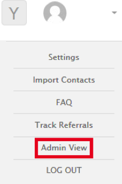
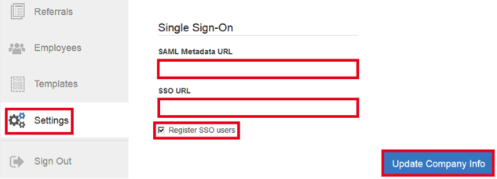

How to Configure SAML 2.0 for EmployeeReferrals.com
This setup might fail without parameter values that are customized for your organization. Please use the Okta Administrator Dashboard to add an application and view the values that are specific for your organization.
Generate the following IDP Metadata:
Log into EmployeeReferrals.com as an administrator.
Switch to the Admin View:

Navigate to Settings > Single Sign-On and enter the following information (see screenshot at end of step for reference):
SAML Metadata URL: Enter the information you copied in Step 1.
SSO URL: Copy and paste the following: Sign into the Okta Admin dashboard to generate this value.
Check the Register SSO Users box.
Select Update Company Info.

Done!
Notes:
SP-initiated flows, IDP-initiated flows, and Just in Time (JIT) provisioning are all supported.
For SP-initiated flows, go to https://[YourSubDomain].employeereferrals.com, then click on LOG IN: